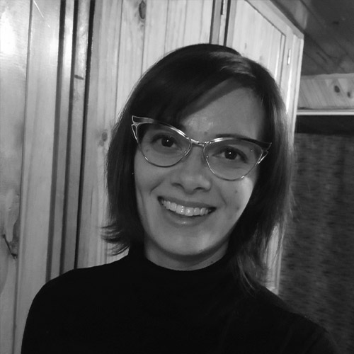
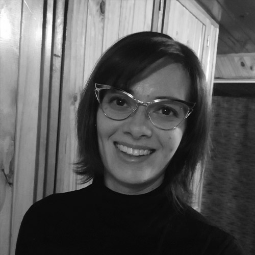

Melina Vidoni
Investigadora
Mi área de trabajo se centra en sistemas de información que facilitan la transferencia, implementación y automatización de soluciones matemáticas (muchas realizadas con Investigación Operativa) a industrias y organizaciones, para que puedan optimizar y mejorar sus procesos. #IngenieriaEnSistemas, #BigData, #InvestigacionOperativaconocela más
Victoria Peterson
Investigadora
Mi área de trabajo se denomina "Interfaces Cerebro-Computadora" (ICC). Mediante estos dispositivos se genera una nueva forma de comunicación directa entre el cerebro de una persona y el mundo exterior. Este tipo de comunicación puede mejorar la calidad de vida de aquellas personas que por alguna enfermedad neuro-muscular tienen disminuido o alterado el control motor voluntario de alguna parte o la totalidad de su cuerpo. Para establecer dicha comunicación se deben traducir ciertos patrones de actividad cerebral en comandos de control. Este proceso de traducción involucra herramientas matemáticas sofisticadas que son capaces de decodificar la intención del usuario de las ICC. Mi proyecto actual se basa en realizar nuevas técnicas de decodificación cerebral, utilizando herramientas de matemática avanzada, estadística, optimización y probabilidad. El impactó que busco constantemente es que, en un futuro, estas técnicas puedan ser utilizadas masivamente, sobre todo en el área de rehabilitación de pacientes con severa perdida motora de alguno de sus extremidades. #interfacesCerebroComputadora, #bioingenieria, #ProcesamientodeSeñalesconocela más
Valeria Zoratto
Investigadora
El aporte que estamos haciendo con el equipo de investigación es lograr que las búsquedas en foros de discusión sobre problemas técnicos (computación) sea mas certera, lo que implicaría menos esfuerzo humano al momento de encontrar una solución al problema que se les esté presentando en un momento particular. #informaticaconocela más
María Emilia Charnelli
Investigadora
Mi trabajo de investigación se trata sobre desarrollar un sistema de recomendación que se aplique en ámbitos educativos, donde el objetivo es poder sugerirle a un alumno qué materiales puede consultar según sus gustos y preferencias. Los materiales a recomendar pueden ser artículos, videos o materiales interactivos. En algunas instituciones como las universidades, los alumnos utilizan diversos sistemas web en donde interactúan con sus profesores o con sus compañeros; a su vez utilizan páginas o grupos informales relacionados con la carrera a través de las redes sociales. La información disponible en estos sistemas puede ser utilizada para analizar las preferencias de los alumnos. El uso de recomendadores en el ámbito educativo beneficia a los docentes porque ayudan con la búsqueda y selección de materiales, y a los alumnos porque pueden acceder a materiales de acuerdo a sus necesidades. Esto les permite profundizar en diferentes temas y encontrar nuevos recursos valiosos. #cienciasdelacomputacionconocela más
Julieta Amalia Burini
Investigadora
Trabajo en laboratorio de Microbiología Aplicada, Biotecnología y Bioinformática de Levaduras del IPATEC (UNCo-CONICET) desarrollando un proyecto de investigación como becaria doctoral. En este proyecto estoy trabajando con una especie de levadura aislada en los bosques Patagónicos que está relacionada con la cerveza. Esta especie, Saccharomyces eubayanus, es uno de los padres de la levadura usada para producir la cerveza Lager, la más consumida. La idea es desarrollar cultivos con estas levaduras salvajes que puedan ser transferidos a la industria cervecera y que resultarían en una herramienta útil para que puedan generar productos innovadores, distintivos e incluso podrían dar lugar a cervezas con denominación de origen, aumentando el valor del producto. Dentro del desarrollo de estos cultivos es importante el recuento de levaduras con el microscopio. Para esto, junto con compañeros del laboratorio, desarrollamos una aplicación de celular que permite sacar fotos desde el microscopio para recontarlas de forma manual con el celular y realiza los cálculos necesarios; además seguimos trabajando para lograr que el recuento sea automatizado a partir de las imágenes obtenidas, facilitando enormemente la tarea. Esta aplicación resulta útil tanto para los que trabajamos en el laboratorio, como para los que trabajan en la industria cervecera dónde el cálculo de levaduras es también necesario.#biotecnologia, #microbiologiaconocela más
Clara Bruzone
Investigadora
Trabajo en el Laboratorio de Microbiología, Biotecnología y Bioinformática de Levaduras del IPATEC (Conicet- UNCo) en Bariloche. Soy becaria Posdoctoral de CONICET y mi tema de trabajo son las levaduras que se usan para hacer cerveza. La producción de cerveza es un proceso biotecnológico, donde la levadura es un elemento primordial. Trabajo mucho con productores de cerveza artesanal brindándoles herramientas microbiológicas y técnicas que los ayuden a mejorar su producto, una de estas herramientas es la reutilización de la levadura cervecera. Al final de la fermentación el productor tiene más cantidad de levadura que con la que empezó, y este es un insumo que puede utilizar en las próximas fermentaciones en lugar de descartarlo, pero para poder hacer esto el cervecero debe utilizar un microscopio que lo ayude a determinar la cantidad y calidad de la levadura producida. Con un grupo de compañeros trabajamos en el desarrollo de una aplicación para celulares que ayude a los cerveceros a implementar la técnica de recuento y cálculo de inóculo de manera más sencilla. Sabiendo que de las condiciones de trabajo que tienen muchos de los cerveceros de la región, generamos una forma de que el productor pueda realizar el recuento sobre fotografías que almacena, y esto le permite realizar el recuento en otro momento y fuera del microscopio. Desde la ciencia y la tecnología generamos una herramienta que tiene como fin contribuir con el trabajo de los cerveceros en la fábrica.#biotecnologia, #microbiologiaconocela más
Milagro Teruel
Aprendizaje profundo.
Me dedico a un subarea de la inteligencia artificial, con redes neuronales. Trabajo con datos de estudiantes que utilizan plataformas online para aprender. Lo que tratamos de hacer es que las computadoras pueda aprender patrones y ayudar a los estudiantes a aprender lo más rápido posible, por ejemplo recomendándoles el contenido más apropiado para su nivel. También esperamos ayudar a los profesores a diagnosticar qué problemas tienen sus cursos y cómo pueden mejorarlos para cubrir la diversidad de aprendizajes. Espero que está investigación pueda causar un impacto real, ya que ayudaría a bajar los costos de cursos masivos y brindar material educativo gratuito de mejor calidad.#AprendizajeProfundoconocela más
María Lidia Herrera
Investigadora
Trabajo buscando alternativas a las grasas trans que son dañinas para la salud con el objetivo de preparar alimentos más saludables.#cienciadelosalimentosconocela más
Elsa Estevez
Investigadora
Estoy trabajando en buscar soluciones que utilicen las tecnologías digitales, como Internet, y teléfonos celulares, para que a las personas les resulte más fácil hacer trámites con el gobierno; por ejemplo, que puedan tramitar el documento de identidad, el carnet de conductor, o pagar impuestos, de la manera sea más fácil y más conveniente para ellos. También trabajo en buscar soluciones para que los ciudadanos puedan participar en las decisiones que toma el gobierno; por ejemplo, que las personas que viven en un barrio puedan decidir si con la plata de los impuestos quieren mejorar la plaza, las calles, la escuela, o hacer alguna otra cosa.#cienciasdelacomputacionconocela más
Maria Clausse
Investigadora
Estoy investigando vacunas contra la brucelosis canina, que es una enfermedad que afecta a los perros y también se contagia a las personas. Lamentablemente, es una enfermedad muy común en nuestro pais y no se toma muy en cuenta. Nuestro trabajo, además de investigar en el laboratorio, es conectarnos con los veterinarios, con la gente y con personas que trabajan en hospitales y en municipalidades, para ayudar al control de la brucelosis. #veterinariaconocela más
Ana Laura Diedrichs
Investigadora
Mi investigación utiliza tecnologías como internet de las cosas y aprendizaje automático para crear un sistema inteligente de predicción de heladas que permitiría ayudar a los agricultores para gestionar mejor su defensa contra la helada para proteger sus cultivos.#inteligenciaArtificialconocela más
Cecilia Inés Paulo
Investigadora
Junto con mi equipo de trabajo buscamos mejorar los procesos industriales, es decir las actividades que realizan las industrias, para que sean más rentables económicamente pero también más amigables con el medio ambiente.#ingenieraquimica, #optimizaciondeprocesosconocela más
Julia Elena Tasca
Investigadora
Trabajo en obtener materiales sintéticos o naturales modificados, con nuevas o mejores propiedades. A veces reutilizando descartes o desechos de otros procesos, otras minimizando el consumo de materias primas, energía y recursos. El objetivo es que mis materiales puedan ayudar a generar desarrollos tecnológicos que permitan a la humanidad cuidar el medioambiente y los recursos, aprovechar responsablemente las fuentes de energías renovables y reducir las emisiones contaminantes. El desarrollo de la ciencia de los materiales ha permitido los mayores avances en los últimos años y es la clave para poder hacer realidad proyectos que hoy parecerían de ciencia ficción. Sin embargo la ciencia no tiene límites y la tecnología nos permite también correr todos los días los límites del conociemiento cerrando un círculo virtuoso maravilloso. Porque aunque todo parezca ya inventado hay muchísimo aún por saber y descubrir. #materialesceramicosavanzadosconocela más
Magdalena Moreno
Investigadora
Estoy estudiando los territorios de las redes de trata con fines de explotación sexual. Esto es muy importante porque es necesario conocer el funcionamiento de esas redes en los diversos territorios para poder desarticularlas.#geografiadegeneroconocela más
Leticia Cecilia Cagnina
Investigadora
Investigamos en la detección del engaño en la Web, identificando tempranamente posibles riesgos como groomers en chats, personas con indicios de depresión en blogs o suplantación de la identidad en redes. Para ello usamos técnicas de Inteligencia Artificial como aprendizaje automático y minería de datos. Hasta ahora hemos obtenido buenos resultados con datos de prueba provistos en competencias internacionales pero esperamos conseguir datos reales en nuestro país. Nuestro objetivo es ayudar a la comunidad con herramientas que permitan identificar automáticamente lo antes posible este tipo de peligro al que estamos expuestos todos los argentinos.#mineriadetextosconocela más
María Paula Villegas
Investigadora
Desde la informática estamos trabajando en diversas temáticas relacionadas con la Web. Hoy en día en muy usual encontrar todo tipo de información en Internet y nuestro desafío es encontrar qué dice todo esto de las personas que están del otro lado aportando esta información. De aquí hemos trabajado con diversos textos averiguando la edad y el género de sus autores. Esto nos permitiría descubrir por ejemplo si en un chat entre dos adolescentes, las palabras aportadas por uno de ellos desmientan que se trate de una persona con tal rango de edad y señalar así un posible depredador sexual. Luego, hemos avanzado buscando otras características, textos que determinen si esa persona sufre de depresión o (actualmente) si padece anorexia, sin decirlo explícitamente. Esperamos que con nuestro granito de arena logremos acercarnos y conocernos más como individuos de una misma sociedad.#informaticaconocela más
María José Garciarena Ucelay
Investigadora
Hoy en día hay disponible una gran cantidad de datos a través de Internet, sobretodo debido al uso de las redes sociales. Nuestro trabajo consiste en tomar esos datos y analizarlos para obtener "información". Para ello, aplicamos distintas técnicas, a veces también desarrollamos nuestras propias ideas o sino mejoramos algunas existentes. El objetivo es poder detectar/predecir ciertos comportamientos, como la depresión por ejemplo, de los usuarios de una red social. Esto puede servir tanto para alertar a la persona, como a sus familiares y amigos, como hasta se podría sugerirle contenido que le ayude a buscar asistencia o a superar algún bajón anímico momentáneo.#cienciasdelacomputacionconocela más
Celia Cintas
Investigadora
Soy Lic. en Informática (UNPSJB) y Doctora en Cs. de la Computación (UNS), Becaria Postdoctoral CONICET. Co-organizadora de SciPyCon Arg. [2013, 2014] y Patagonia Python Meetup. Miembro de Linuxchix Argentina. Integrante del Laboratorio de Ciencias de las Imágenes y Grupo de Investigación en Biología Evolutiva Humana. Durante el doctorado investigué métodos basados en procesamiento de imágenes y aprendizaje automático para estudios bioantropológicos. Entre uno de los proyectos desarrollamos de una aplicación para realizar escaneo 3D y obtención de variables antropométricas que permiten cuantificar la forma corporal, de esta manera buscamos poner a disposición de los especialistas una herramienta que sirve para realizar un análisis antropométrico confiable y de bajo costo. El landmarking automático, definido como la localización de puntos característicos, es un paso intermedio importante para muchas operaciones de análisis facial/corporal, desde aspectos biométricos, la interacción hombre-máquina, la animación de modelos, comprensión de expresiones faciales, reconstrucción 3D, videojuegos, etc. Todos los proyectos son desarrollados gracias a que trabajamos en equipos interdisciplinarios, formados por informáticos, biólogos, antropólogos, genetistas y médicos. Al unir diferentes disciplinas se logra una sinergia que plantea una visión integral permitiendo más beneficios a la sociedad. Todos los proyectos fueron y están siendo desarrollados gracias a que trabajamos en equipos claramente interdisciplinarios. Al unir diferentes disciplinas se logra una sinergia que plantea una visión integral permitiendo más beneficios a la sociedad. #cienciasdelacomputacionconocela más